Ваш розумний помічник для городу
Обирайте ділянку на супутниковій карті, плануйте грядки, стежте за культурами та отримуйте аналітику врожаїв — все в одному застосунку для Android.
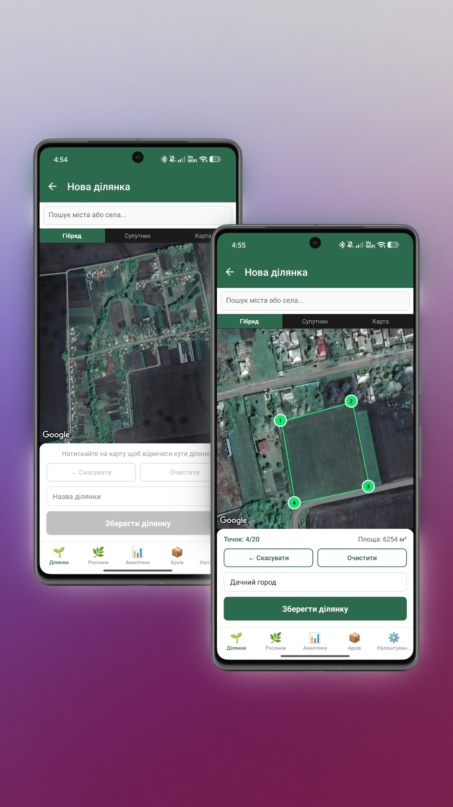
Від розмітки ділянки до аналізу врожаїв — GardenMap веде ваш город від першої посадки до останнього збору.
Позначте кути своєї ділянки прямо на супутниковому знімку. Площа розраховується автоматично за формулою Гаусса.
Розбийте ділянку на іменовані грядки у вигляді інтерактивної сітки. Малюйте грядки пальцем прямо на плані.
Відстежуйте кожну культуру: дата посадки, сорт, фото та автоматичний зворотний відлік до дня збору врожаю.
Поточна погода для координат вашої ділянки. Лічильник сухих днів сигналізує коли городу потрібен полив.
Чотири типи графіків: врожайність по культурах, календар посадок, якість врожаю та хронологія збору.
Алгоритм аналізує два попередніх сезони і підказує що можна, а що не варто садити на кожній грядці.
Покроковий ілюстрований посібник від першого запуску до збору врожаю.
Після запуску ви потрапляєте на головний екран зі списком усіх ваших ділянок. Для кожної відображається назва та площа.
Навігація має 5 вкладок: Ділянки · Рослини · Аналітика · Архів · Налаштування
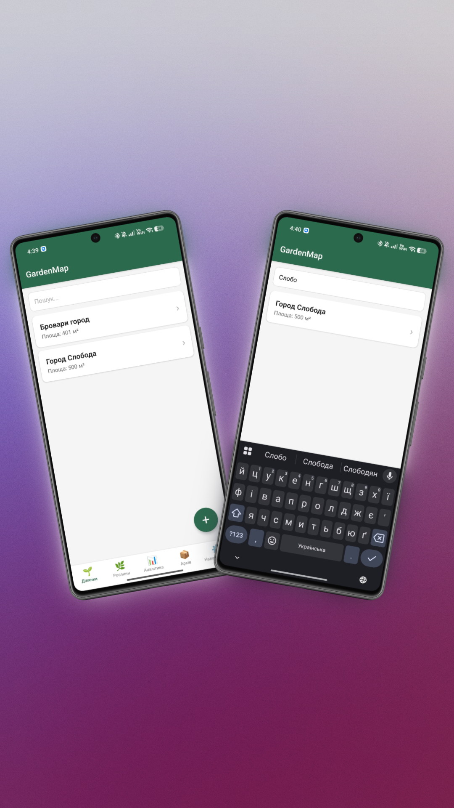
Натисніть «+» → «На карті». Відкриється супутниковий знімок з перемикачем режимів: Гібрид / Супутник / Карта.
Після збереження відкривається екран ділянки. Вгорі — статистика: площа, кількість грядок, рослин.
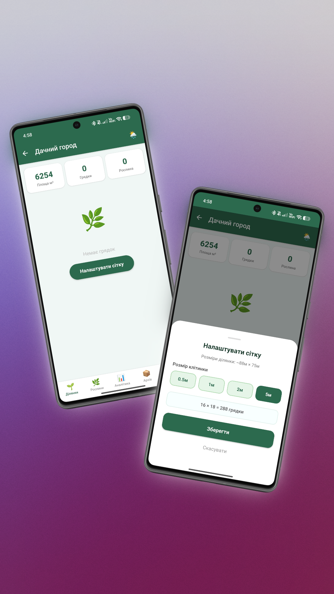
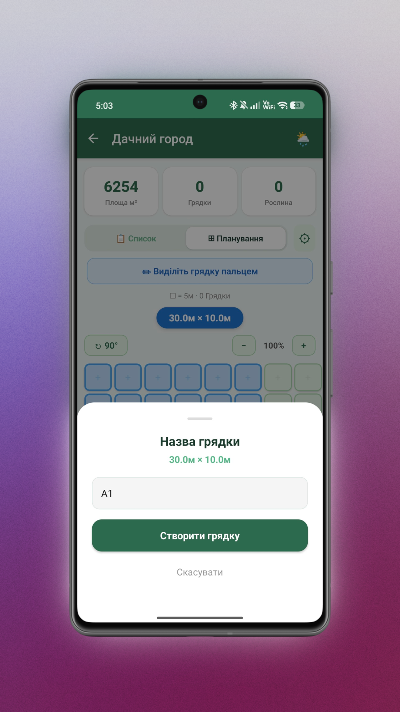
Натисніть на грядку → перейдіть до екрану грядки → «+» щоб додати рослину.
На екрані ділянки в режимі «Список» видно всі активні культури з прогрес-баром до збору:
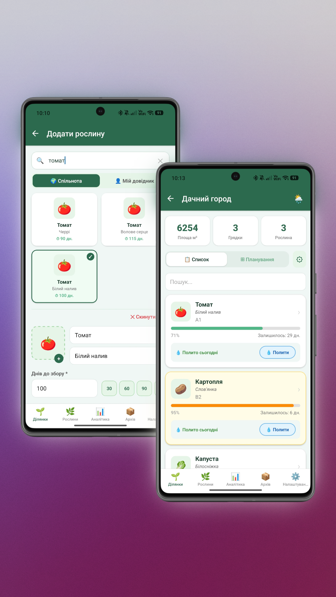
На екрані ділянки — смужка з поточною погодою. Натисніть на неї щоб відкрити детальну панель.
Щоб встановити місце: натисніть 🌦 у заголовку екрану ділянки та введіть адресу.
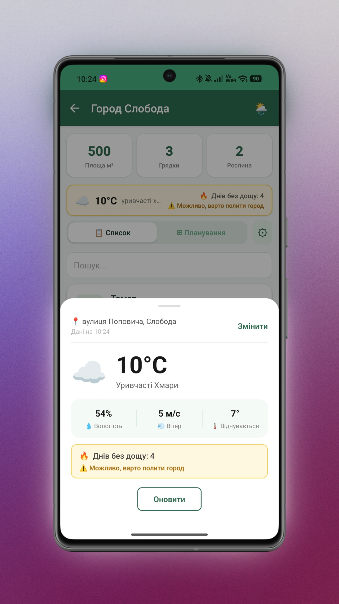
Коли підходить час збору — натисніть «Пора збирати» на картці культури. Відкриється форма запису.
При «остаточному зборі» — культура закривається і переходить до архіву, грядка звільняється.
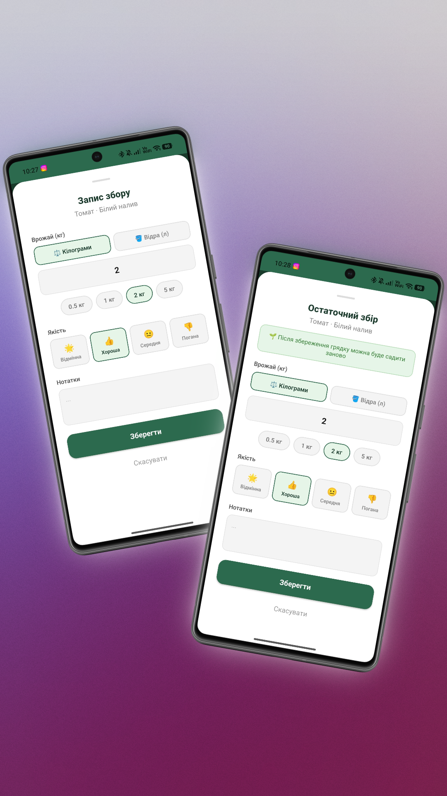
Вкладка «Аналітика» у нижньому меню. Фільтрування по ділянці та грядці.
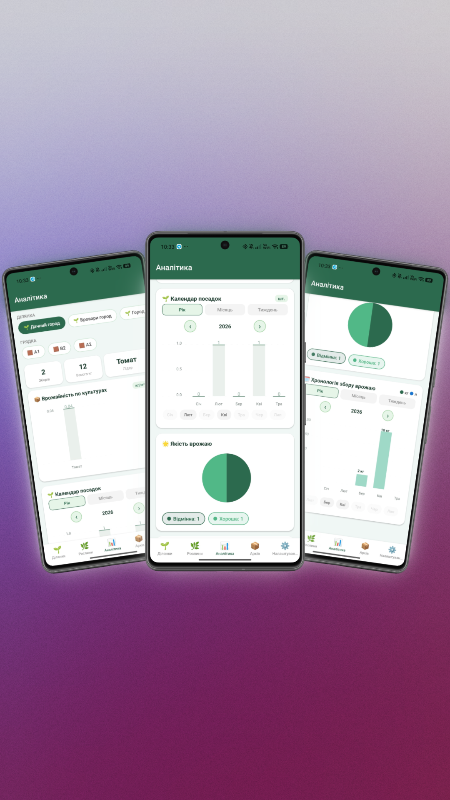
Вкладка «Архів» у нижньому меню — всі зафіксовані врожаї з можливістю фільтрування.
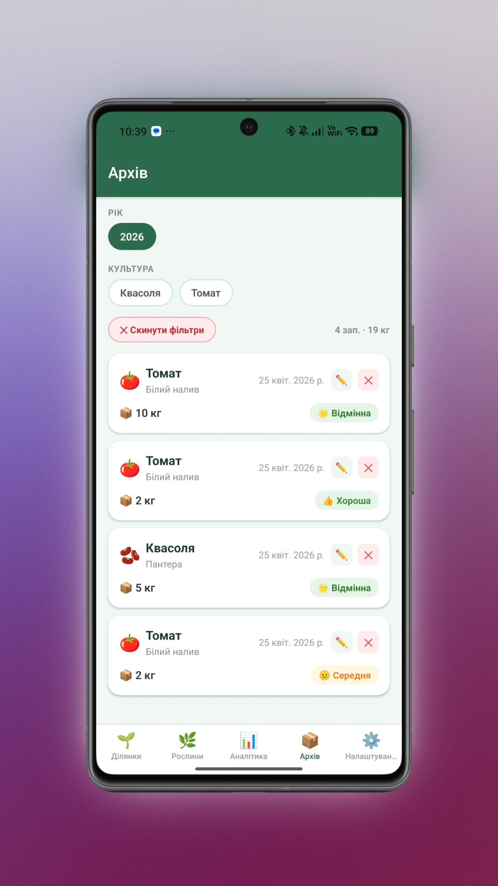
На екрані грядки — блок «Попередні культури» та «Що посадити наступного сезону». Алгоритм аналізує 2 останніх сезони.
На прикладі після Томату: рекомендовані — Огірок, Морква, Цибуля, Капуста...; уникати — Томат, Картопля, Перець, Баклажан.
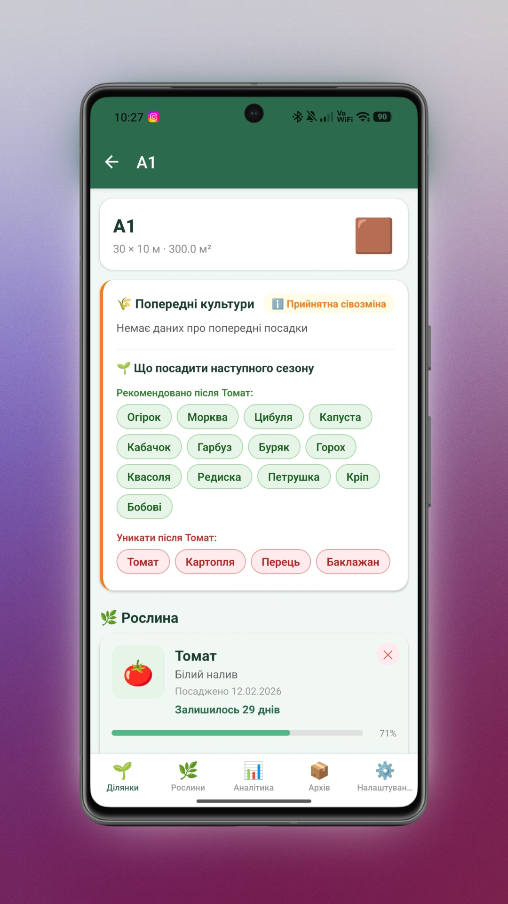
Вкладка «Налаштування» — ⚙️ у нижньому меню.
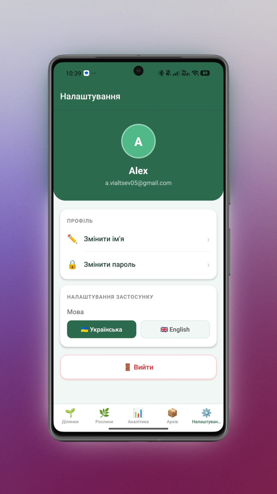
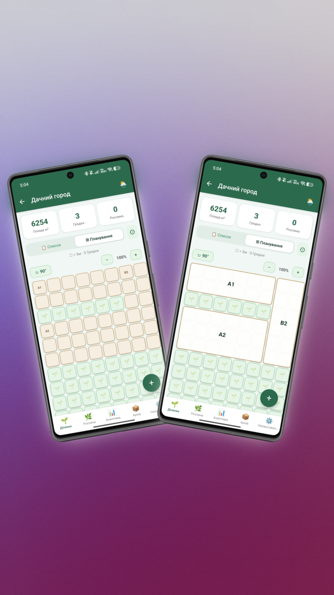
Режим планування: ліворуч — порожня сітка, праворуч — створені грядки A1, A2, B2